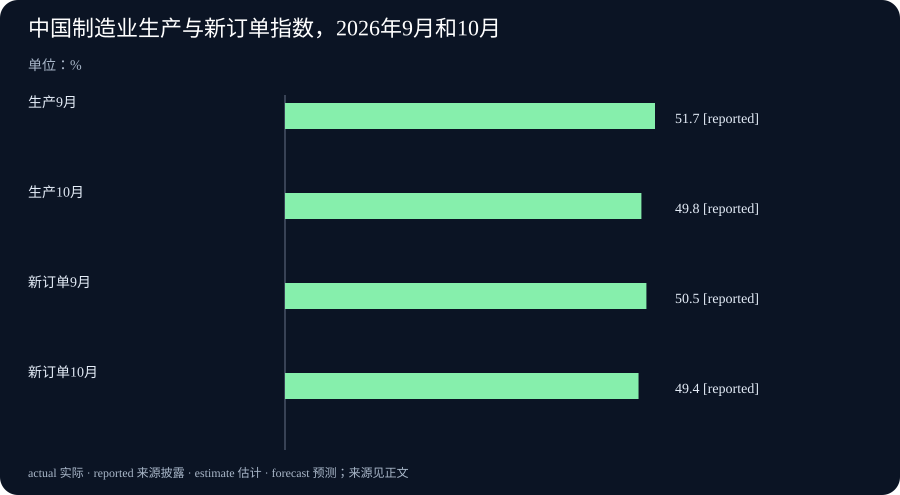

Daily Intelligence · 2026-11-01
研究截止：2026年11月1日07:02:01，Asia/Shanghai。观察窗口自10月31日07:02:01起。主要原文标注10月31日；未取得可独立确认时区的首次公开小时，不声称全部已证实落在严格24小时内。产品计划、软件发布、月度调查和供应安排分别说明。
Today's Thesis
人工智能（AI）的变化正在落到具体入口：Apple公布中国用户使用首批功能的时间安排，OpenAI的Java开发工具补充连续任务的设置。这里的代理是会调用工具完成任务的软件，会话指一段连续交互。入口更明确之后，实际价值仍取决于可用范围、执行结果和维护。中国制造业调查与澳大利亚燃料简报也提醒我们：安排、预期和手头已有的结果，需要分别观察。
Executive Summary
Apple宣布11月4日起开放首批中国版AI功能的开发者测试，12月随系统更新正式提供；这不包含全部下一代Siri功能。OpenAI则发布Java开发工具4.95.0，补上长任务中的资料整理、审阅与工具设置。它改变应用能够表达哪些请求，没有证明模型更聪明或所有账号都获准使用。
中国10月制造业采购经理指数回到50以下，生产与新订单分项也下降。澳大利亚政府披露柴油和航空燃料的供应覆盖天数，并介绍未来四周安排交付的燃料。调查方向与供应安排都值得跟进，但指数不是产量增速，在途货物也不是已经到岸的库存。
本期新增事实是10月31日公布的中国功能时间表、新软件版本、10月采购经理调查及新的燃料供应更新。与最近两期相比，没有重复文件编辑、费用分析、在轨AI、望远镜处理或美欧季度增长消息。
AI Daily
1. Apple公布中国首批AI功能安排，测试与正式推出分两步
Apple于10月31日宣布，首批Apple智能功能自11月4日起随iOS开发者Beta版测试，计划12月随iOS 27.3正式向中国用户提供。Beta是先供试用和发现问题的测试版，不能与正式版本互换。首批功能包括实时翻译、文字改写和摘要、照片消除，以及通过部分系统入口使用阿里巴巴千问。Apple中国官方公告
范围同样具体：公告列出受支持的iPhone，要求设备与Siri语言采用规定设置；其他平台还需必要审批。这次不包含Siri AI以及2026年开发者大会宣布的其他下一代功能。因此，“千问可以从Siri入口使用”与“全部新一代Siri已经交付”是不同说法，后者不符合本次公告。
对普通用户，值得先核对的是自己的设备、语言和功能是否在清单里，再看正式开放后的表现。编辑判断是，系统内入口可以减少来回切换应用的步骤；至于翻译、人名、数字和摘要是否准确，仍要在实际材料上检查。本期没有测试产品，也不把计划日期说成已经全面上线。
2. Java开发工具补充代理会话设置，接口支持仍有使用条件
OpenAI官方仓库的4.95.0发布页标注10月31日。Java是一种编程语言；软件开发工具包，简称SDK，是应用连接服务时使用的现成代码。本次版本增加代理上下文压缩设置、会话审阅和工具设置，以及从回答中读取由服务方运行的工具使用信息的接口。官方版本说明
上下文是模型在当前任务中能读取的信息；压缩设置对应长任务怎样整理这部分材料。相关修改说明把它放在测试阶段的代理与会话接口中。另一个修改允许创建或更新会话时传入审阅选项，并在更新会话时替换工具。工具在这里是应用允许代理调用的功能，不是实体设备。压缩设置修改、会话与工具修改
这些是实际的客户端功能增量，不是单纯重打包。但SDK能传递一个选项，并不表示服务器对每个账号都开放相应能力，也不保证某种审阅方式自动生效。更合适的采用办法，是分别检查请求能否正确送达、设置是否被服务接受，以及异常后会话处于什么状态。公告没有提供通用准确率或速度提升，本期不据版本号推算这些结果。
Business Daily
1. 中国制造业调查回落，大小企业方向不同
国家统计局和中国物流与采购联合会10月31日发布10月采购经理调查。制造业采购经理指数，简称PMI，为49.3%，比9月下降0.8个百分点。它把企业对生产、订单等变化的回答整理成扩散指数；50是这套调查的方向分界，不是经济零增长线，49.3%也不表示产量下降了0.7%。国家统计局原始发布
生产指数由51.7降至49.8，新订单由50.5降至49.4。两项同时回落，为“本次调查中的生产与需求景气转弱”提供了具体支持，但不能单凭问卷推算实际产量或销售金额。
企业规模也有差别：大型企业PMI为50.2%，中型和小型分别为48.4%及47.5%。这提示总体读数未必代表每类企业的处境。读者若关心某家供应商，仍要查看它自己的订单、库存和收款，不宜用全国调查直接替代公司经营记录。10月是回答涉及的月份，31日是新披露日期。
2. 澳大利亚更新燃料供应，未来交付仍需到岸
澳大利亚气候变化与能源部长Chris Bowen于10月31日的记者会介绍，柴油覆盖34天、航空燃料覆盖29天，分别比上周更新多3天和1天。官方文字稿还称，43艘船正在前往澳大利亚，未来四周已安排交付31亿升燃料，比上次更新多1亿升。澳大利亚政府原始文字稿
这些是部长当次披露的供应情况，本期未独立审计。覆盖天数是按供应与使用情况表达的保障尺度，不能当作每天固定倒数的全国停供日期。31亿升描述未来交付安排，不是已经存放在岸上的燃料；船数也不对应相同装载量，不能用总量除以43推算每艘船的货物。
部长同时承认国际供应链仍有不确定性。这使后续问题更明确：安排的货物能否如期到达，炼厂与分销是否正常，以及实际需求怎样变化。文字稿开头的汽油天数句子有截断，本期不引用该项数字；记者提问中未经确认的船舶事故说法，也不写成已核实事实。
Macro Observation
制造业问卷与燃料供应更新都能提供及时信息，但观察对象不同。前者记录企业相对上月的判断，后者披露一国供应覆盖和未来货流安排。一个回落不等于所有工厂减产，一个覆盖天数增加也不等于运输风险已经消失。
对经营者，比较有用的联系是把需求和交付分别放进计划。订单趋弱时，备货仍要考虑供应能否准时；供应更充裕时，也不能直接推断客户需求提高。这是对经营机制的分析，本期没有证据证明中国PMI的变化由澳大利亚燃料安排造成，或两者可以解释某家AI公司的成本。
同样，软件接口更完整与企业愿意扩大使用也有距离。团队需要设备、维护人员和明确任务；外部需求、能源与收款条件仍会影响预算。技术入口、使用效果和经营约束应各看对应证据。
Signal Dashboard
| 变化 | 现在可以确认 | 下一步观察 |
|---|---|---|
| Apple中国安排 | 已公布11月测试、12月正式推出的计划与范围 | 支持设备、实际开放情况与功能表现 |
| Java SDK 4.95.0 | 客户端增加压缩、会话审阅及工具设置 | 账号资格、设置实际效果与异常处理 |
| 中国制造业调查 | 10月PMI49.3%，生产与新订单分项回落 | 后续同口径调查、实际订单及产出 |
| 澳大利亚燃料 | 部长披露覆盖天数与未来四周货物安排 | 到岸、炼制、分销及使用情况 |
表中计划、软件功能、问卷与供应披露各有自己的含义，不能相加成一种整体景气分数。
Deep Insight
从公布入口到持续可用，中间需要哪些记录
一项新能力往往先以日期和清单进入公众视野：什么功能何时测试，哪个版本增加了设置，货物将在多久之内交付。这样的信息有明确价值，因为人们可以据此准备。但准备和使用之间还有一些容易被省略的步骤：确认自己是否符合条件，看到安排是否落实，出现偏差后找到原因。把这些步骤留在记录里，比只记住一个发布时间更接近实际判断。
对个人用户，功能清单可以成为一个很小的检查表。假设用户主要想处理外语来电，就先核对设备与语言，再在不影响重要事项的情况下试用，听取或阅读结果，并保留人工确认的方式。这个例子只说明选择方法，不代表本期已经证明翻译有效。若主要需求是另一项尚未包含的功能，即使系统更新已经安装，也不能说自己的需要已经满足。明确希望完成什么，会让人更容易理解产品覆盖范围。
开发者面对的是设置如何进入执行。一个请求可以合法地包含新字段，与服务器实际采用该字段，是前后相连的两步。再往后，应用还要知道执行失败、取消或重复请求时怎样处理。假设系统允许改变会话中的工具，团队就需要确认旧工具是否仍能被调用、新工具是否受预期权限限制。这里提出的是测试问题，不是在描述本次更新已经出现漏洞。代码中的选项提供了更细的控制入口，组织仍要用可重复的小任务了解这些控制到底怎样工作。
经营信息则需要把安排与实际进度放在同一条时间线上。未来四周的燃料交付，可以成为持续观察的清单；后续到岸和分销情况，决定计划能否转成使用者实际拿到的供应。覆盖天数提供当前尺度，却仍受到使用量和补充速度影响。即使总安排充足，某个地区、某种燃料或某个交付日也可能有不同情况。因此，后续应寻找同口径更新，避免把一个时点的数字理解成不再变化的保证。
制造业调查又提醒我们，及时信号不一定使用实物数量。企业对订单和生产的回答，可以更早显示经营感受，但指数的0.8点变化不能直接换算成多少产品、多少收入。若要据此改变采购或人员安排，可以先把调查与自己的订单记录放在一起，再看库存和收款能否支持调整。全国总读数与一家公司的情况不同，不意味着其中一份一定错了，而可能只是观察范围不同。
这些阅读方法并不要求等到一切确定才作决定。用户可以按清单准备试用，开发者可以安排受控升级，企业可以按不同需求和交付情景准备。关键是为每项决定保留一条可更新的依据：当前知道什么，接下来会看到什么，出现什么情况要改变安排。这样，新的公告就成为持续判断的起点，而不只是每天换一个标题的乐观或悲观理由。
Tomorrow Watch
继续观察Apple是否按公布范围开放开发者测试，以及正式版本的资格和功能说明是否变化；它的计划不是承诺本栏事项明天就发生。Java开发工具则关注后续文档、使用条件和可重复的会话测试，不把新增字段解释成新模型能力。
经营方面，跟踪中国下一轮同口径调查与实际生产、订单材料，保留大型与中小企业差别。澳大利亚燃料更新需要与到岸和供应安排互相核对，不能把一项预计交付量反复当作新增库存。
One Chart
制造业生产与新订单，两项调查指数同时回落

图中生产指数为9月51.7、10月49.8，新订单指数为9月50.5、10月49.4，沿用原表的%单位，数值表示调查指数。四项均取国家统计局10月31日同一张经季节调整的数据表。图中的reported表示“来源披露的数字”，不是预测。原始表格
两组指标从50上方移到下方，说明本次调查方向发生变化；柱子不是产量、订单金额或对应百分比增速。它们是总体PMI的部分构成，不能简单平均后代替49.3的综合读数，也不能与不同规模企业的PMI混成一条序列。
Quote of the Day
If there is no struggle, there is no progress.
中文：没有斗争，就没有进步。
人物：Frederick Douglass（弗雷德里克·道格拉斯）
出处：1857年在纽约州Canandaigua所作《西印度解放》演讲。美国国家公园管理局的道格拉斯历史遗址页面收录原句、演讲和年份；哥伦比亚大学教学材料收录相关段落及原始手稿定位。历史遗址原文与出处、演讲摘录及手稿说明
上下文：道格拉斯讨论反对奴隶制、争取自由需要行动与抗争，而非只赞同自由却反对争取自由的过程。中文为本报译文，保留其政治与历史语境。
编辑解读：这句话首先值得作为自由史的一部分阅读，不必强行给每项技术更新找类比；它也不是现代产品和经营结果的证据。
Action Items
- 自己能用到哪些功能？ 核对Apple设备、语言和首批清单，分开记录测试与正式推出的日期，再安排实际试用。
- 设置是否真的被执行？ 升级开发工具时，用小任务检查账号资格、会话设置、工具变化与异常反馈，不只确认请求能够发出。
- 指数测量的是什么？ 看到PMI回落时，先区分调查方向与实际产量，再对照自己关心企业的订单和收款。
- 货物安排何时变成供应？ 将未来交付、实际到岸和分销分别记录，不把31亿升全部计入当前库存。
- 什么变化会让安排调整？ 为试用、采购或升级写下下一项观察条件，等新证据出现再更新判断。
信息边界
固定研究截止为2026-11-01T07:02:01+08:00，窗口自2026-10-31T07:02:01+08:00开始。Apple、国家统计局和澳大利亚政府原页均标10月31日，发布小时未披露。Java 4.95.0的GitHub页面显示“released this 31 Oct 00:55”，本次未取得可独立核对的时区元数据，故仅按10月31日发布记录使用，不声称精确上海发布时间已证实。
Java相关代码讨论早于正式发布，本期增量是这些功能进入4.95.0版本，不将每个代码改动再算成一条独立新闻。采购经理调查描述10月，燃料简报描述当次覆盖与未来四周交付；Apple未来安排没有当作已上线。经典演讲不受新闻窗口限制。跨事件联系、假设及行动建议属于本报分析。